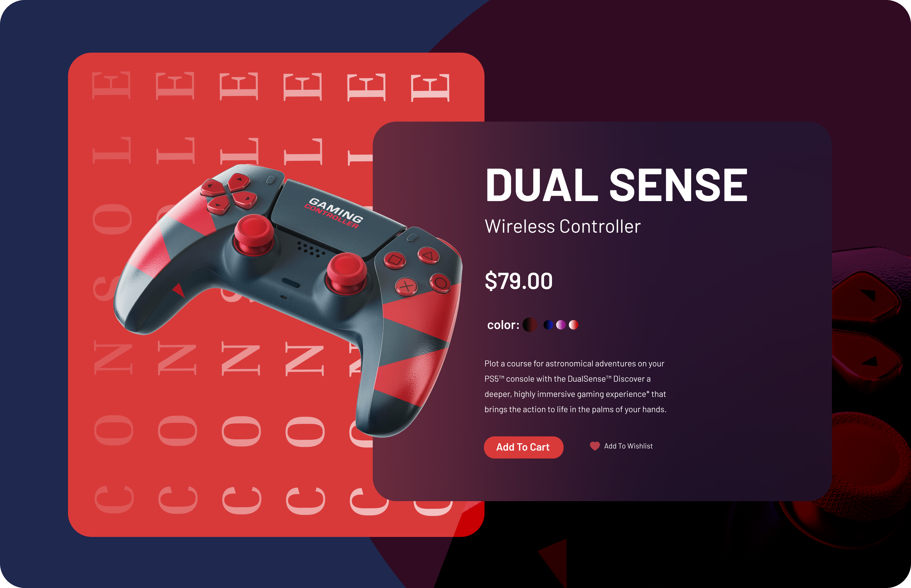
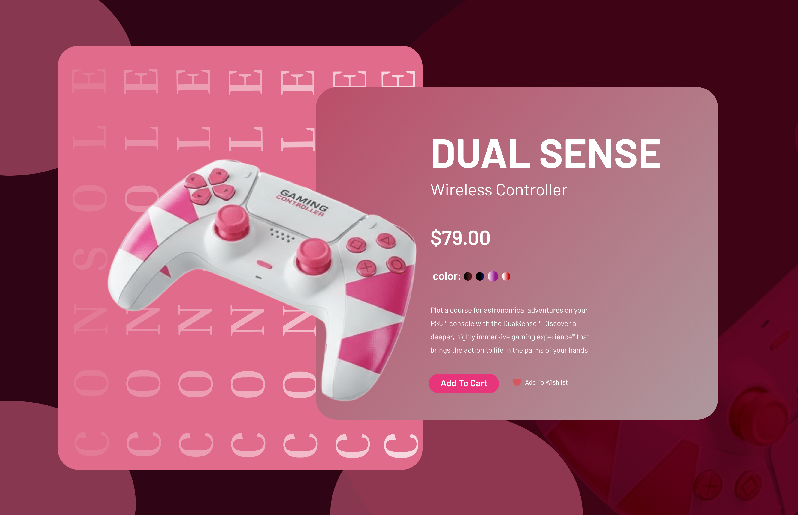
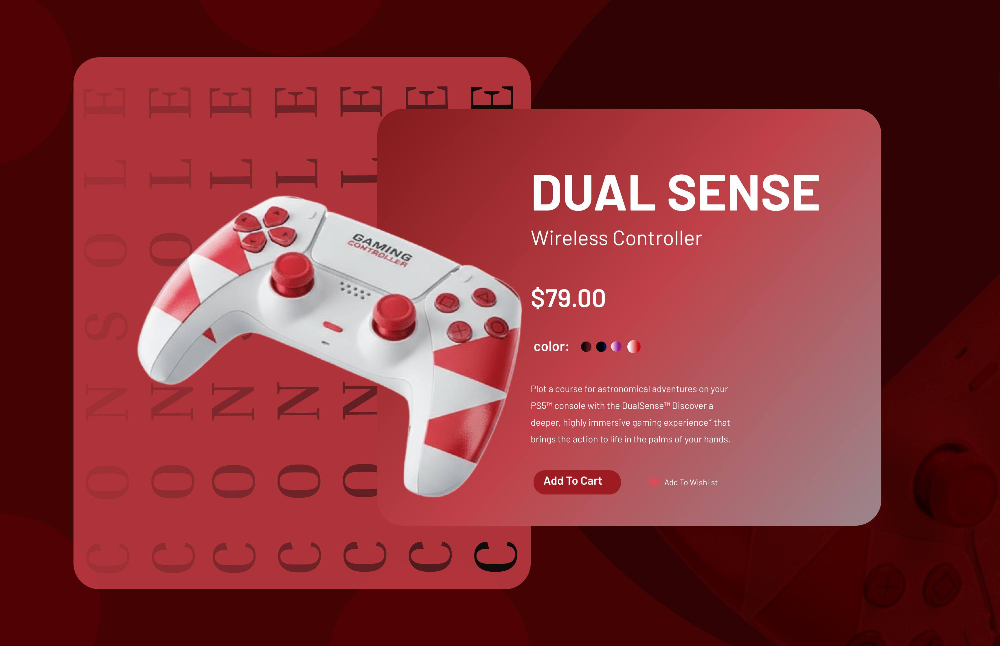

UI design showcase
Gaming Console UI Designs
A concept UI series built to feel immersive, bold, and entertainment-first.
UI design showcase
A concept UI series built to feel immersive, bold, and entertainment-first.

Overview
Problem
Approach / Process
Design / Development



Result / Outcome
Learnings
CTA